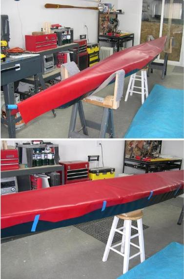

| Covering The Deck (2 of 5) | Menu Previous Page Next Page |
|  |
One-Piece Deck
1. The deck shape determines whether a one or multiple piece deck is required. If the deck is peaked fore and aft like the "Symetric" shown here, a one piece deck works fine. Flat decked kayaks such as Klepper or Folbot, can be made in one piece also.
A deck that is peaked forward, flat aft, or has a slope at the coaming, requires a multi -section deck . The "Sea Rider" Greenland kayak on the previous page uses multiple sections. Any deck can be made in several sections if conditions warrant.
2. Position the skin over the frame. Trim to within 3 inches of the gunwales and allow a few inches of overhang at the ends. Tape the skin to the hull every couple of feet with masking tape to hold the skin in place while marking the trim line.
|